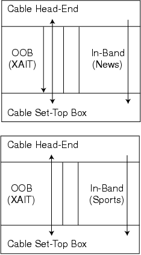

Figure 3: Out-of-band information can always be communicated to applications regardless of the currently active service. Here, the in-band content changes from News to College Football, but the out-of-band channel is unaffected by channel changes.
Back to Article